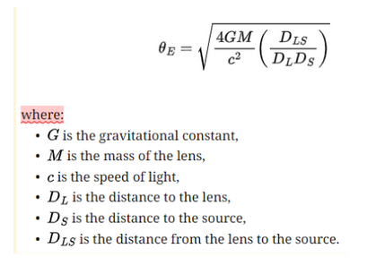

Microlente Gravitacional
O objetivo deste projeto é estudar e entender o fenômeno de microlente gravitacional causada por Pulsares. Dessa forma, entendendo como podemos processar fotometria e astrometria de tais eventos, e buscando detectar mais objetos compactos. buscamos aferir a massa desses objetos.
Microlente refere-se ao caso especial de GRAVITATIONAL LENSING onde as múltiplas imagens produzidas estão muito próximas juntos no céu para serem observados como imagens separadas. No entanto, a lente ainda pode ser detectada porque estas múltiplas imagens aparecem como um único objeto de maior brilho aparente. O raio de Einstein é um conceito fundamental em lentes gravitacionais, particularmente relevante no contexto de microlentes. Representa o raio da imagem em forma de anel (anel de Einstein) formado quando a fonte, a lente e o observador estão perfeitamente alinhados.

Este raio depende de vários fatores, incluindo a massa do objeto da lente, a distância do observador à lente e a distância do observador à fonte atrás da lente. O raio de Einstein determina a escala do efeito de lente, com valores maiores indicando um efeito de lente mais forte. É um parâmetro crítico porque define a escala angular na qual os efeitos de lente são significativos, como ampliação e curvatura da luz. O conceito é usado para prever e analisar fenômenos como a curvatura da luz em torno de objetos massivos no espaço, contribuindo para a nossa compreensão dos objetos e da distribuição de massa no universo.
O projeto tem como modelo calcular o raio angular do anel de Einstein e a área coberta por ele ao longo do tempo para um determinado pulsar. Ao combinar isso com a densidade conhecida das estrelas de fundo,podemos estimar o intervalo típico entre eventos de microlentes para qualquer estrela de alto movimento próprio. A raridade de tais eventos exige a observação de centenas de pulsares de alto movimento próprio para detectar alguns eventos de microlentes anualmente. Apesar dos desafios, a abordagem oferece um método simples para determinar as massas de objetos com microlentes, uma vez obtidos os dados observacionais necessários .